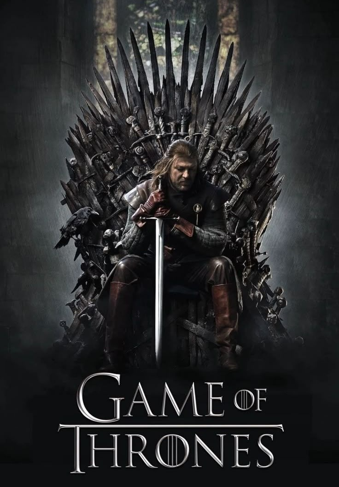
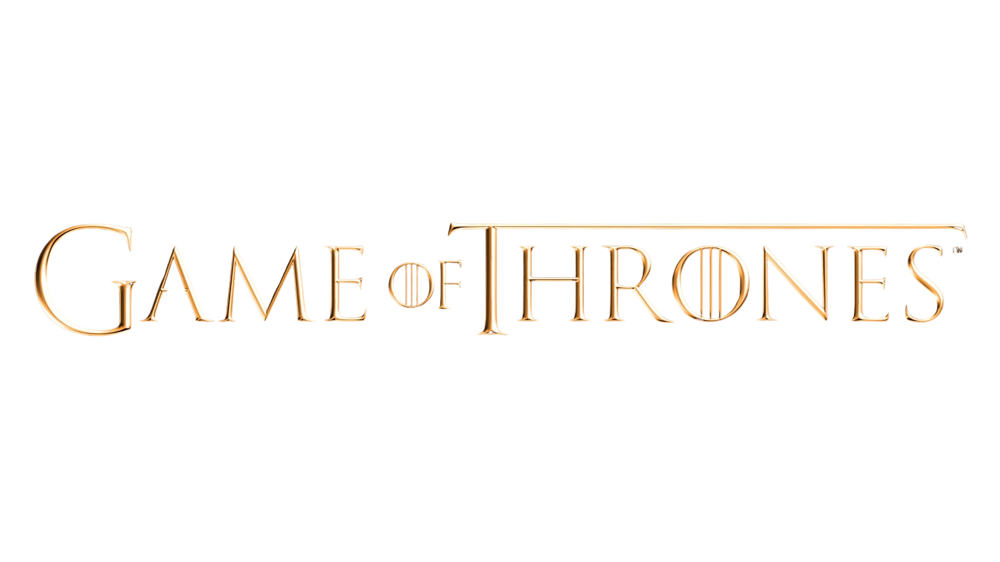
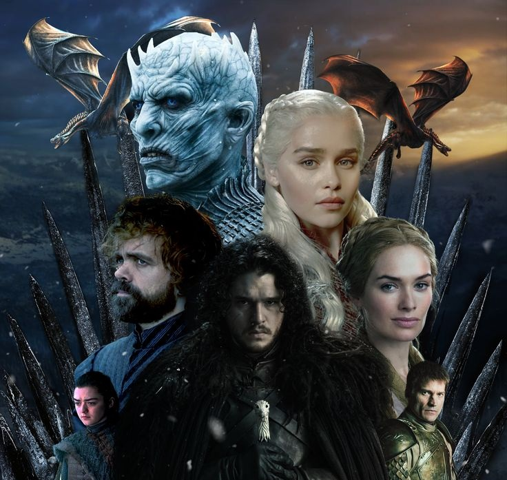
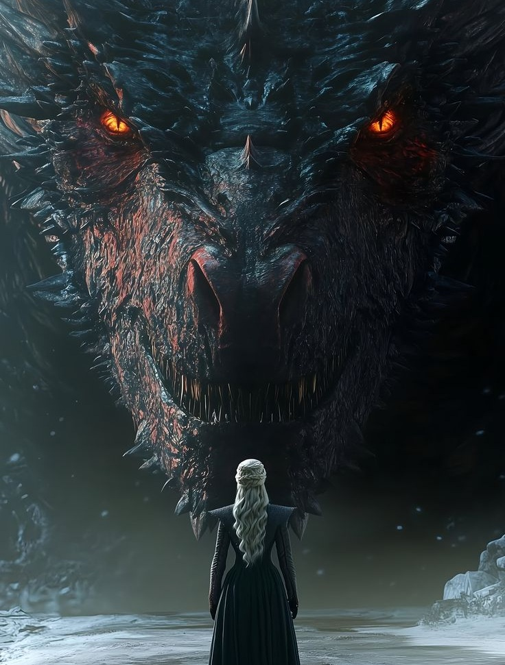

Game Of Thrones
Un monde où loyauté et ambition s’affrontent sans merci.
17 Avril 2011


17 Avril 2011

La famille Stark de Winterfell est composée de Ned Stark, son épouse Catelyn et leurs enfants : Robb, Sansa, Arya, Bran, Rickon et Jon Snow, présenté comme fils illégitime mais en réalité fils de Lyanna Stark et Rhaegar Targaryen. La famille Targaryen comprend Daenerys, son frère Viserys et Aegon, alias Jon Snow, caché pour le protéger. La famille Lannister de Castral Roc est composée de Tywin, Joanna et leurs enfants : Jaime, Cersei et Tyrion. La famille Baratheon de Storm’s End inclut Robert, Stannis et Renly. La famille Greyjoy de Pyke comprend Balon et ses enfants : Yara et Theon.

À Westeros, plusieurs familles se disputent le Trône de Fer et le pouvoir sur les Sept Couronnes. Les Stark du Nord, les Lannister de l’Ouest, les Baratheon, les Greyjoy et d’autres maisons s’affrontent dans une lutte faite d’alliances, de guerres et de trahisons. De l’autre côté de la mer, Daenerys Targaryen cherche à reprendre la couronne perdue de sa famille. Au-delà du Mur, une menace ancienne grandit avec les Marcheurs Blancs et leur armée. L’histoire suit le destin de ces familles et la rencontre inévitable entre la guerre des hommes et le danger venu du Nord.